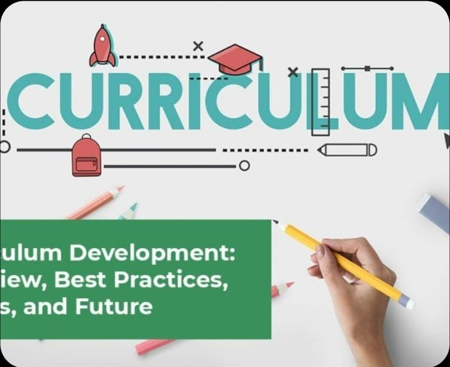
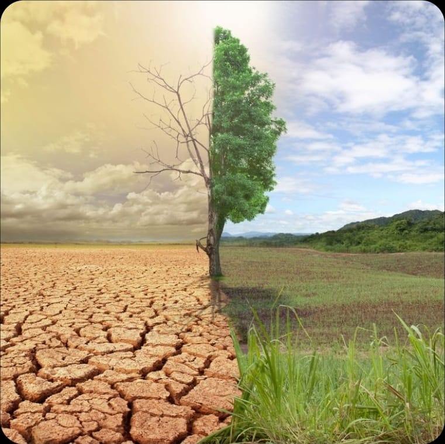
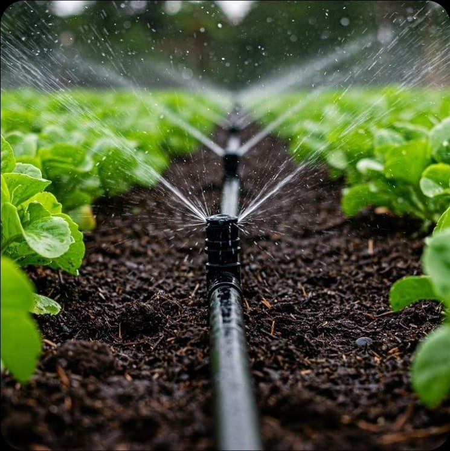
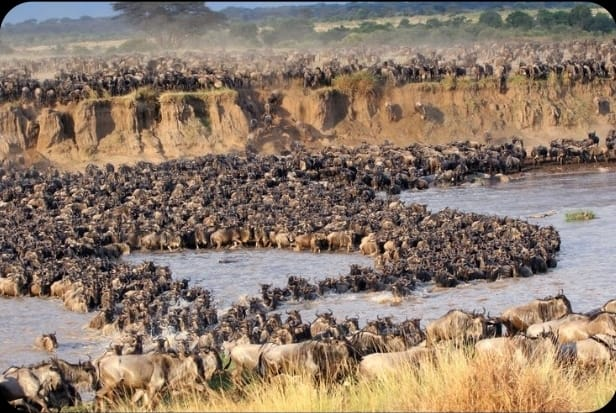
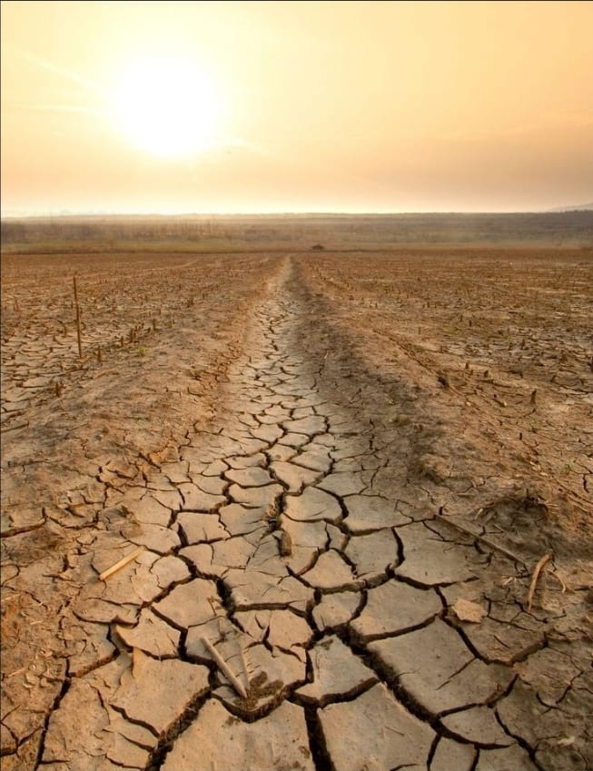

Breaking News
Government announces new policies measures aimed at strengthening the economy and improving public services. These policies focus on job creation,investment, and improved service delivery.
Your Source for Trusted News
Government announces new policies measures aimed at strengthening the economy and improving public services. These policies focus on job creation,investment, and improved service delivery.
Mobile banking services are making financial transactions faster and more accessible, especially in rural areas.It has improved financial inclusion by allowing users to save, transfer and access credit through their mobile phones.
Rising talents impress fans and scouts with outstanding performances.
Mental health awareness initiatives are helping reduce stigma and encourage individuals to seek support. They also emphasize that early intervention,community support and access to proffesional care are key to improving overall well-being.

Education authorities have intoduced a revised curriculum designed to equip learners with practical skills and critical thinking abilities. The changes focus on competency-based learning,creativity and better assesments methods.
Business across various sectors are recording steady growth driven by increased investment,innovation and improved market access.

Meteorological department have issued advisories following changes in weather patterns, including increased rainfall in some regions and higher temperatures in others. Residents are urged to stay informed and take necessary precautions.
Members of parliament are currently debating a proposed bill aimed at addressing key national issues. Supporters argue that the bill will promote development and accountability while critics call for further review before it is passed.
The music industry is rapidly evolving as artists and producers embrace digital streaming and social media platforms. Independent artists are also gaining global audiences, while traditional record sales continue to decline.
The tourism sector is experiencing a boost as both local and international travelers visit popular and emerging destinations. Experts highlight that improved infrastructure, marketing and sustainable tourism practices are contributing to the industry's growth.
Space agencies around the world are launching ambitious missions to explore Mars and other celestial bodies. Scientists aim to study the planet's surface, cliamte, and potential for past life, while technological innovations push the boundaries of space travel.

Agriculture experts report that farmers are increasingly adopting modern farming methods,including irrigation, high yield seeds,and sustainable practices. These changes aim to imprrove food security, increase productivity and support local economies.
Police report an increase in local crime, including theft and vandalism, prompting stronger community policing measures. Law enforcement urges residents to stay vigiant and participate in neighborhood safety programs.
Fashion enthusiasts are embracing fresh styles as emerging designers are showcase innovative collections. Experts note that creativity, sustainability and cultural influences are shaping the latest trends this season.
More people are focusing on mental health and personal well-being.
Relious groups continue to play a huge role in charity and social development.

Annual wildebeest miration draws global attention. Thousands of wildebeest have begun their annual immigration in search of fresh grazing land and water. The movement often referred to as one of the greatest wildlife spectacles on earth, attracts tourists and highlights the importance of preserving natural immigration corridors.

Different parts of the country is experiencing drought leading to water shortage, crop failures and rising food prices.
Unemployment continues to affect many young people as number of job seekers grows faster than availabe employment opportunities.Experts cite limited job creation, skills mismatch and economic uncertainity as key contributors.
Inflation continues to affect households as prices of basic goods and services rise. Economists explain that higher fuel costs , supply chain disruptions, and increased demand are contributing factors,prompting calls for policy measures to stabilize the economy.